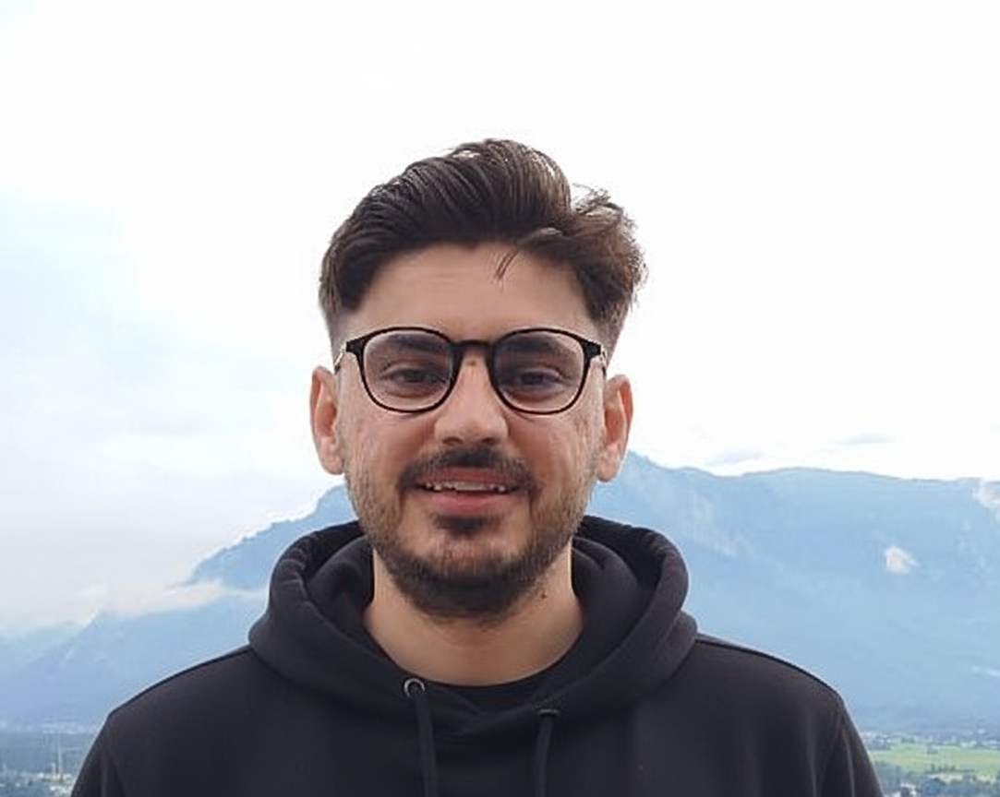
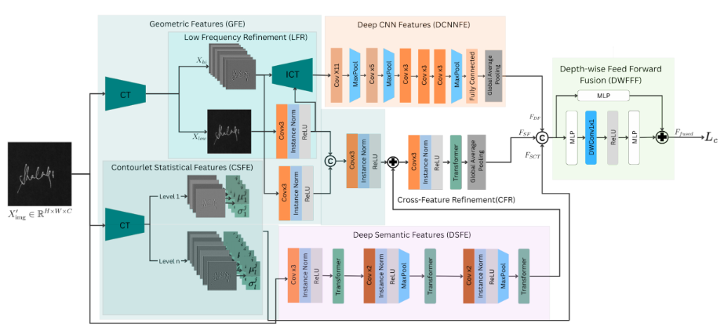

|
 |
Haider AliResearch Assistant, Deep Learning Lab (DLL), NCAI, NUST, Islamabad, PakistanMachine Learning Engineer, Dcube (US-based company), Islamabad, Pakistan Prev: Research Intern, Computer Vision and Mixed Reality Lab, RheinMain University, Germany (DAAD) Email: hali.msai22seecs[at]seecs[dot]edu[dot]pk CV | Google Scholar | Github | LinkedIn | ORCID |
Research Interests
- Remote Sensing and Earth Observation
- Super-Resolution and Generative (Diffusion) Models
- Uncertainty Quantification and Trustworthy Geospatial AI
- SAR–Optical Fusion and Cloud-Robust Segmentation
- Computer Vision
News
- Oct 2026: Guest lecturer (6 credit hours) for CS-250 Data Structures and Algorithms, NUST SEECS.
- Sep 2026: Selected for the IEEE GRSS IADF School on Computer Vision for Earth Observation, Italy.
- Aug 2026: Poster presentation at IEEE IGARSS 2026, Washington, D.C., USA. The paper is now published in the proceedings.
- Mar 2026: Second paper accepted at IEEE International Geoscience and Remote Sensing Symposium (IGARSS) 2026.
- Jan 2026: Joined the Deep Learning Lab (DLL), NCAI, NUST as a Research Assistant.
- Aug 2025: Poster presentation at IEEE IGARSS 2025, Brisbane, Australia.
- Mar 2025: First paper accepted at IEEE International Geoscience and Remote Sensing Symposium (IGARSS) 2025.
- Jan 2025: Joined Dcube as a Machine Learning Engineer.
- May 2024: Awarded a DAAD grant for “Super-Resolution of Satellite Images” (German Academic Exchange Service, DAAD); summer 2024 research stay in Wiesbaden, Germany.
- Jan 2022: Awarded the Gold Medal for the highest GPA in the Software Engineering batch of 2017.
Publications
Ongoing Research
-
Cloud-Robust SAR–Optical Semantic Segmentation from Clear-Sky Labels | 2026 – Ongoing
A two-stream SAR–optical network trained on clear-sky images only, with a SAR-only head, evaluated on real cloud cover (CloudSEN12) and three further benchmarks. Manuscript in preparation. -
Uncertainty-Aware Diffusion Models for Super-Resolution | 2026 – Ongoing
Conformal prediction, wavelet-domain losses and multi-modality alignment for diffusion-based super-resolution that reports where its output can be trusted. Manuscript in preparation. -
Multi-Spectral Super-Resolution and Wildfire Segmentation | 2026 – Ongoing
A unified super-resolution and burnt-scar segmentation pipeline on Sentinel-2 imagery of U.S. wildfires. Manuscript in preparation. Industry Projects
-
Real-Time Behavior Detection on Edge Devices | Jan 2025 – Ongoing
Skills: Computer Vision, Edge AI, YOLO, PyTorch, Hugging Face, Gemini Cloud Vision, Ultralytics, Docker, Gradio
Leading the research side of an edge-deployable system for real-time human behavior detection from CCTV camera streams, jointly addressing detection and recognition tasks. Developed an end-to-end, real-time video analysis pipeline to detect and recognize license plates, faces, phone usage, and factory bags, optimized for on-device inference under tight latency and compute constraints.
[Demo] -
Italian Text Embedder | Aug 2025 – Dec 2025
Skills: NLP, Machine Learning, PyTorch, Hugging Face, Sentence Transformers, BERT, Python, NumPy, Docker
Led a team of five to develop a compact text embedder via teacher–student knowledge distillation, achieving 98% score parity with e5-large-multilingual on the MTEB benchmark.
[Code] Awards & Honors
- Selected for the IEEE GRSS IADF School on Computer Vision for Earth Observation, University of Sannio, Italy (Sep 2026)
- DAAD grant for "Super-Resolution of Satellite Images" (German Academic Exchange Service, DAAD), May 2024; Summer 2024 research stay in Wiesbaden, Germany
- Semi-finalist, Fulbright Scholarship (Sep 2022)
- Gold Medal for the highest GPA in the Software Engineering batch of 2017 (Jan 2022)
- Incubation and PKR 600,000 grant for a research project to develop a smart writing assistant tool for novel writers (July 2021)
- Balochistan Talent Award for innovative product idea (Dec 2020)
- Winner of the Tech Marathon coding competition organized by USAID (Sep 2019)
Technical Skills
- Remote Sensing & GeoAI: Sentinel-1/2, SAR, Multispectral Imagery, rasterio, GDAL, GeoPandas, QGIS, Sentinel Hub, Planetary Computer
- Computer Vision: Super-Resolution, Diffusion Models, GANs, Transformers, Image Segmentation, Object Detection (YOLO)
- Frameworks & Libraries: PyTorch, TensorFlow, Keras, Scikit-Learn, OpenCV, timm, MMSegmentation, Hugging Face, Sentence Transformers
- Languages: Python, C++, SQL, JavaScript, Java
- MLOps & Tools: CUDA, multi-GPU training, Docker, Conda, Git, Linux, Jupyter Notebook, VS Code
- Backend & Cloud: FastAPI, Node.js, Express.js, AWS (Lambda, EC2, ECS, S3), MongoDB, VectorDB
Leadership & Teaching
-
Guest Lecturer (6 credit hours) – CS-250 Data Structures and Algorithms, NUST SEECS (Oct 2026)
Taught C++ fundamentals, trees and binary trees, and tree traversal algorithms for Prof. Dr. Faisal Shafait's course. -
Computer Vision Lab Instructor – Advanced AI Bootcamp, NUST (Oct 2023)
Designed and delivered lectures on advanced computer vision concepts, including object detection and image segmentation. Guided students in implementing deep learning algorithms. -
Founder & Tech Lead – Storybook AI-Based Writing Tool (June 2021 – Apr 2022)
Led a team of five to develop software that assists novel writers. -
Online Python Course Instructor – Udemy & Skillshare (Jan 2021 – Present)
Designed curriculum, created content, and managed course publication. Over 4,000 students enrolled.
[Fundamentals of Programming with Python]

|
Non-Local Sparse Attention Based Multi-Image Super-Resolution Haider Ali, Maxim Dolgich, Ulrich Schwanecke, Adrian Ulges, Faisal Shafait IEEE International Geoscience and Remote Sensing Symposium (IGARSS), 2026, Washington, D.C., USA (Poster), pp. 2383–2388 [Paper (DOI)] [Code] |
|
 |
GeoCT-SigNet: A Geometry-Aware Hybrid CNN–Transformer Network for Offline Signature Verification Haider Ali, Momina Moetesum, Adnan Ul-Hasan, Faisal Shafait, M. Imran Malik Under review in IEEE Access, 2026 [Paper] [Code] |

|
RGB Super-Resolution for Multispectral Remote Sensing Images Haider Ali, Maxim Dolgich, Fabian Stahl, Ulrich Schwanecke, Adrian Ulges, Faisal Shafait IEEE International Geoscience and Remote Sensing Symposium (IGARSS), 2025, Brisbane, Australia (Poster) [Paper] [Code] |
Design adapted from Prof. Sunghoon Im, DGIST.